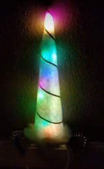

Table of Contents
Biking
Lots of stuff to put here, but let's start with the helmet for now.
Main intention is to get away from just one small bike light pointing forward. No matter how bright, it will be indistinguishable from streetlights or car lights that are far away because of its size. You need to increase how big the light looks!
- Also, blinking the light in a fast strobe-like way is quite annoying for drivers and makes it hard to judge how far away you are. So, the below pattern for the helmet isn't the best. Probably will update soon.
Bike Helmet
{kind=link}
- Easily visible from the side, front, and back.
- Pretty easily programmable in fun patterns.
- Runs off of a simple 5V cell phone battery charger.
- Easily made
- Water resistant enough so far
- All useful items are easily removable for charging and security
Materials
- Soldering iron + solder. The one sold at Harbor Freight for $10 probably works fine.
- Glues
- Hot glue
- Cheap ($.03-.05 per inch))
- Cures in minutes, faster if you have a fan going or blow on it
- Bond strength is easily adjusted by temperature
- Easy to remove and leaves little residue, in general. If you sand the surface, then it increases the bond strength a *ton* and becomes much more annoying to remove!
- Can be easily reworked using a common hair dryer
- Downside is it softens slightly (loses bond strength) in hot weather, but you can buy higher temperature stuff built for this. Once it cools down again, it's back in action. Doesn't
- To stick to non sticky surfaces, either sand it or make it permeable. Rivets! YouTube Link! https://www.youtube.com/watch?v=rCZrGZirRkg YouTube Link! https://www.youtube.com/watch?v=Rt2OWYFBOoI
- Silicone glue (for gluing to and sealing the LED strip silicone sheath. siliconized acrylic doesn't work.
Buy a big 100% silicone tube for $5, caulk gun style (buy one of those too if you haven't yet, you'll keep using it)). Also, can seal using a nail inserted into it, I think. Not sure, Google itNot all glues are the same! Permatex RTV is a known good brand. Not sure about other RTV silicones. GE 100% is a known not great one. - Epoxy (for the neodymium magnets and optionally the steel). JB weld and probably the Harbor Freight knockoff works good.
- 5V weatherproof individually-addressable color LED strip. You don't need the density of mine,
but it was only an extra few dollarsand it was 5X more expensive for 2X the density! The only downside with having more LEDs is that there's more current draw at idle (more resistors) and you need to watch your max power draw more (I still had plenty of headroom with the below pattern though). I bought an RGB+White strip, but the extra white led isn't necessary.- I ordered one from BTF-Lighting: $30 for 1 meter of 144 leds/meter. https://www.amazon.com/gp/product/B01N1NR75S/ref=oh_aui_search_asin_title?ie=UTF8&psc=1
- Recommended: You can get 5 meters at 60 LEDs/m for $35! https://www.amazon.com/ALITOVE-Individually-Addressable-Flexible-Waterproof/dp/B00VQ0D2TY/ref=sr_1_1_sspa?ie=UTF8&qid=1548046305&sr=8-1-spons&keywords=rgb%2Bled%2Bstrip%2B12v%2Bwaterproof%2Baddressable&th=1
- I looked for 12V strips for other parts of the bike, and it seems you can't get individually addressable version, they only are addressable in a set of 3 LEDs, which kinda makes sense. Well, 5V it is then!
- Also useful are individual “loose” LEDs (not in a strip). here (ALITOVE WS2811 Addressable LED Pixel Light 50pcs 5V 12MM Digital Dream Color Diffused RGB LED Pixels Module). Enables horns really well!  (https://livelaughlovetocraft.wordpress.com/2017/10/25/light-up-unicorn-horn-tutorial/)
- Neodymium magnets. The ones at Harbor Freight are good enough. Small enough to use in small amounts as needed, but you'll use the whole $3 pack. Ebay is also a good source, look for old hard drive magnets (they can be too big though) 1 lb for $8 w/ free shipping! Barring that, I harvested some from old electric toothbrush heads.
- Flat thick (1/16“) steel (I bought some thick washers from Ace), or more magnets. Don't mate two hard drive magnets (unless you have spacers in between), or else you won't be able to rip it apart!
- Phone battery charger (5V). I think 1A output is fine. Monoprice has good prices.
- Short micro USB cable and a USB extension cable (for plugging into computer). Monoprice.
- Wire, capable of carrying 1A at 5V (<28awg?). I got mine from a surplus electronics store.
- Small 5V Arduino-compatible microcontroller. The clones on Amazon for $3-4 each seem to work fine, although they're mini USB. I ended up buying an Adafruit Pro Trinket to thank Adafruit for the NeoPixel library that I leveraged. The Neopixel library should work fine on the arduino clones too.
- Front LED headlamp that is focusable. It's not really bright enough to see by or big enough to be seen with, so I turn it on occasionally for looking ahead in known turns in dark areas. The Coast headlamp I have is bright, but doesn't support rechargeable AAA batteries
 Very likely other brands will.
Very likely other brands will.- Tip with this. Just buy some that have good reviews on Amazon, pick your favorite, and return the rest with free return shipping!
{kind=link}
Close-ups
{kind=link}
Need epoxy to make the hard drive magnet stick well enough. Could do the same for the steel mount. I used silicone, as I think hot glue wasn't good enough. Doesn't really matter which surface has the magnet.
{kind=link}
Closeup of silicone gluing of front LED strip. Be sure to put enough silicone underneath any part of the strip/connections that might flex on impact so that they no longer flex and last longer 
{kind=link}
Back of helmet. Very key is the giant blob of hot glue providing strain relief for the fragile LED strip connection. They could share a common power and ground wire at this point, but it was too annoying to solder and potentially repair.
- I need to silicone the left connection still as I might be out and about and need to leave my helmet in the rain.
- Leave plenty of extra slack (didn't do a great job of this), so you can re-do the soldering on either end if needed several times over without needing to re-solder all of your connections with new ribbon cables. Not so necessary in this case, but really useful for annoying stuff like car wiring.
{kind=link}
Closeup of Arduino connections.
- Using a flat piece of plastic from a food container as a surface to hot glue the arduino and wires onto for strain relief.
- Strip extra insulation off two wires from the power and ground pins from the Arduino so you have a “trunk” for connecting both LED strips to.
Surround the whole thing in a downward facing jewelry bag, as it's too big for a Tic Tac box and it's hard to get plastic boxes in that dimension. Need to hot glue shut still and write down source. Not very rugged!I have a better method now.
{kind=link}
Back battery mounting. Same sorta thing as for front headlamp. Need silicone/epoxy for high strength items, but hot glue worked fine in this case for the steel. You need to get the angle to match perfectly so it doesn't wobble, so I built up the steel washer angle using hot glue.
{kind=link}
A wider view of the back of the helmet.
Will publish code soon.
Why Sell It?
Why do people keep asking if I'm going to sell it? Some possible reasons for and against.
Pro
- ~“You could get rich!”. Haha…
- “I don't have time/energy/etc to assemble it myself. I'll gladly pay $50 to have a quick stick solution.” Ala: https://www.lumenflex.com/product/brightcycle/ ($65 for a lamer version, but it's probably robust!). And LightRider:
- That's a great point. Hmm…
- I've mentioned “you can make it yourself!” to people that say “cool helmet!” and their face visibly sinks.
Against
- Because making a reliable product and supporting it takes a lot of not-so-fun work. I would rather let someone else do it.
- There's something satisfying about being able to make something that didn't exist before, know how to fix it if it breaks, and be able to tweak it easily.
- On the downside, it's not as polished or maybe as reliable as a $200 product.
- Can easily apply the learning to other projects, as you'll see soon…
- Cheaper. $50 in parts, plus a few hours of labor!
- It's kinda custom for each helmet / bicycle. Hard to sell a whole bike as a kit when people have different tastes.
Let me know what you think! nolan.hergert@gmail.com
Further improvements
- Heat shrink and silicone around led strip solder connection? Heat shrink is less for water ingress than to ensure wire strain relief.
- Don’t want a strong loop around microcontroller, maybe just tack small spot on back. Want it to be able to break off in case it is bumped or collided. (don’t want the cables to experience any strain)
- Want kinda strong velcro loop around battery, as it’s heavy and can get flung about during biking. Moving head, etc.
- Cover for removable USB connection to battery to prevent water ingress. Make out of instamorph? Trick is making it around the usb cable.